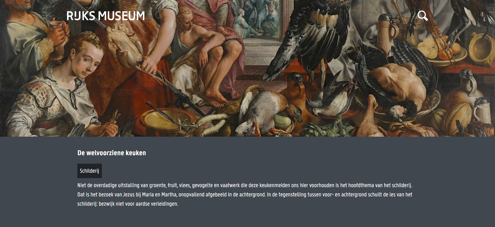

Rijkskunst
De opdracht
Voor dit project was de opdracht; maak een serverside rendered Progressive Web App, waarbij je ook de performance gaat optimaliseren.
Mijn invulling
Om de kunst van het Rijksmuseum te kunnen bekijken uit je luie stoel heb ik de webapp Rijkskunst ontwikkeld. Door middel van een API van het Rijksmuseum worden de werken ingeladen en kan de gebruiker deze per categorie bekijken.
